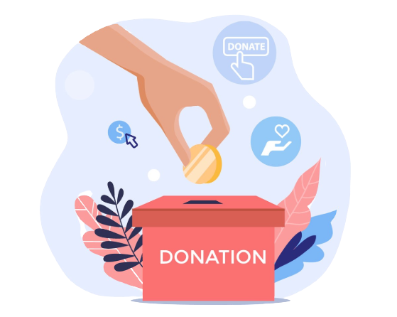

The emergence of a large population of orphaned youth in sub-Saharan Africa is due to the natural maturity of orphaned children. Research indicates that orphaned youth face more negative psychosocial challenges than their younger counterparts do. Furthermore, these challenges are intensified for early school leavers. The present study shows that the orphans and OVCA in institutional homes are vulnerable to behavioral and emotional problems. When you give to Save the Children, every Rupee goes straight to our mission to provide lifesaving relief to children. With your support, we can continue our work to keep children around the world healthy, educated and safe.